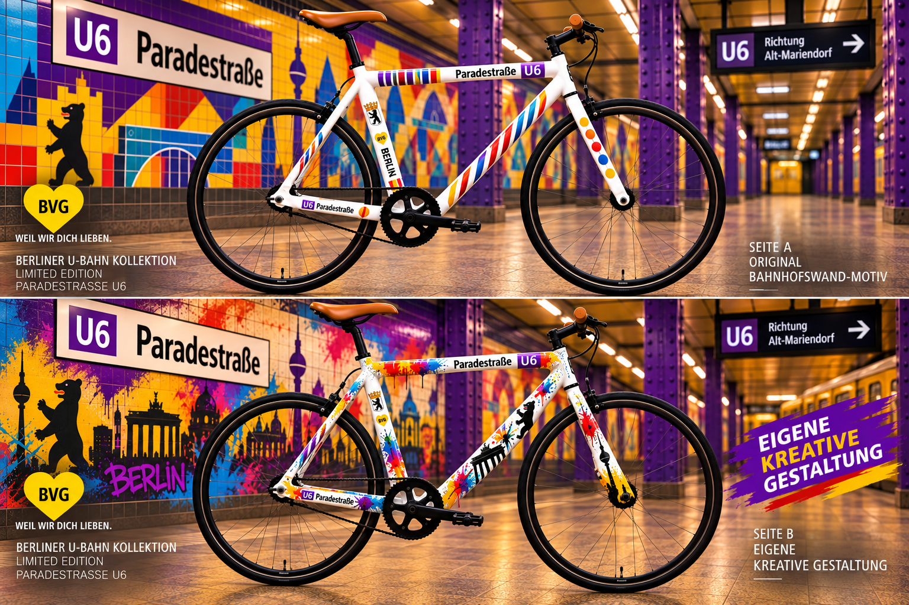
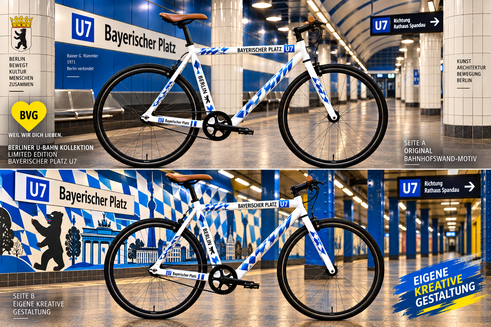
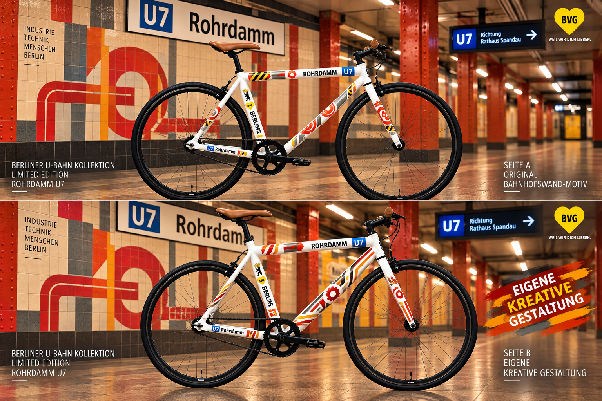
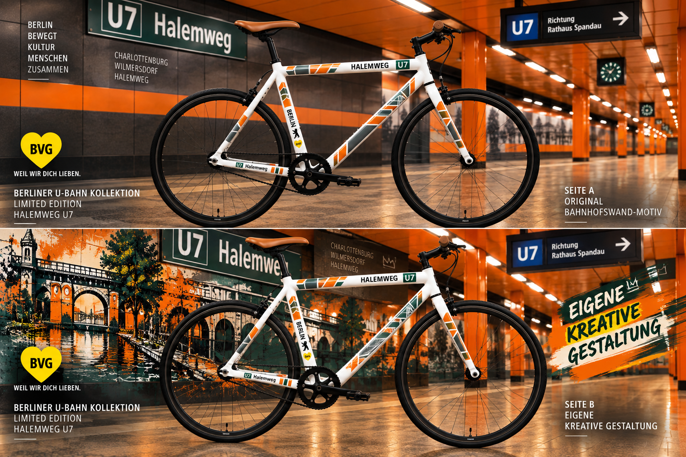
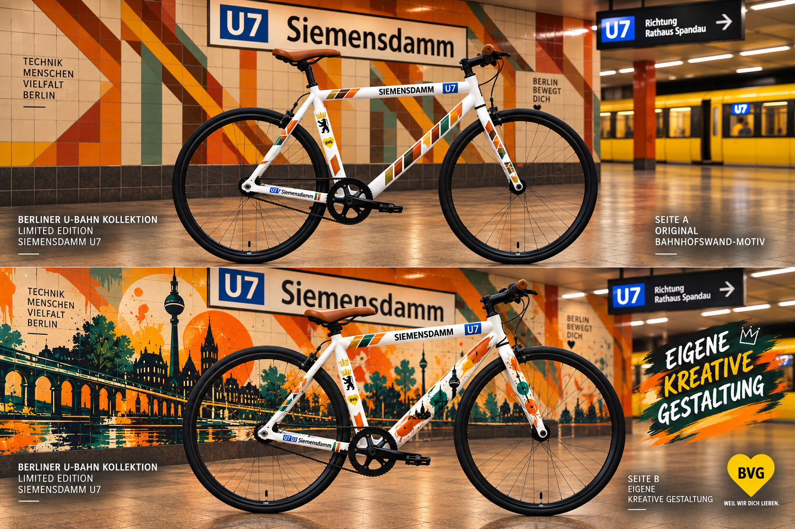
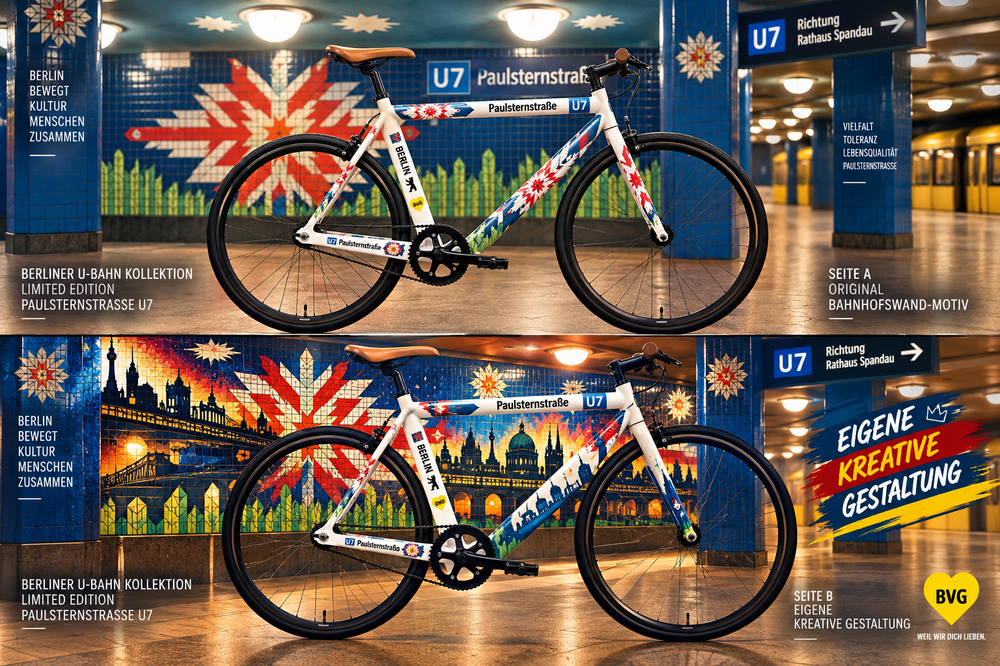
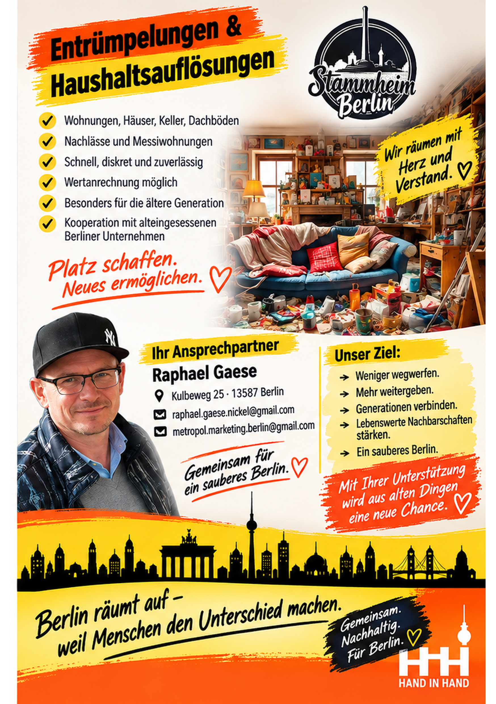
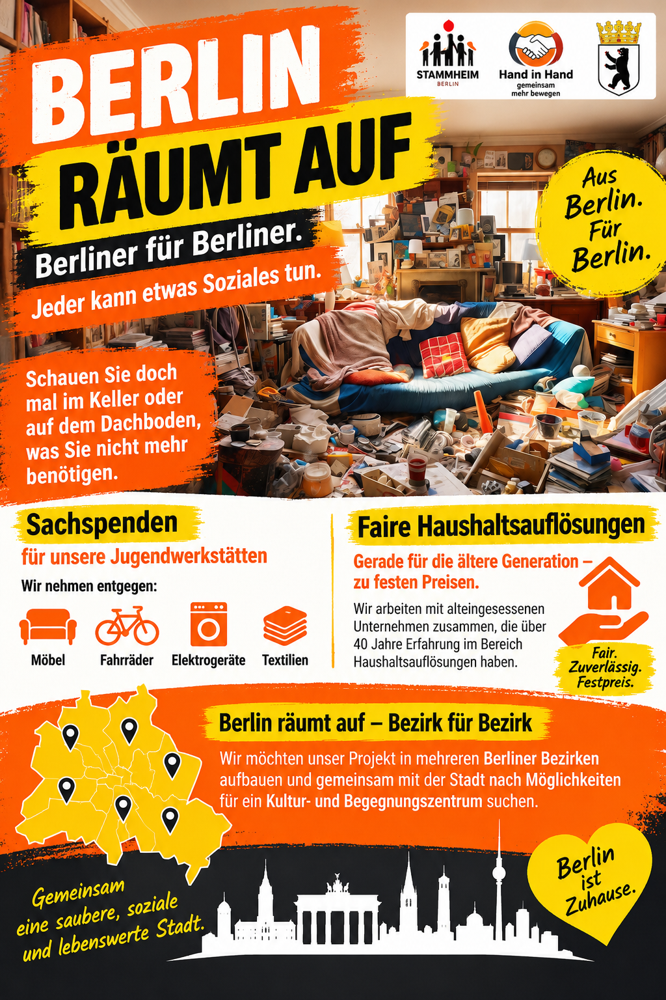

7 Gründe, warum Hand-in-Hand erfolgreich sein kann und von Anfang an durchdacht ist
Unser Konzept verbindet junge Menschen, Familien und ältere Generationen. Die folgenden sieben Gründe zeigen, auf welchen Gedanken und Erfahrungen unser Verein aufbaut.
1. Chancen entstehen dort, wo Menschen Zugang zu Möglichkeiten erhalten
Junge Menschen haben Talente, Ideen und Kreativität. Häufig fehlt jedoch der Zugang zu Werkzeugen, Materialien, Instrumenten, Sportausrüstung oder erfahrenen Ansprechpartnern.
Hand in Hand – Eine bessere Zukunft e.V. möchte einen Ort schaffen, an dem junge Menschen unter klaren Regeln kostenlos lernen, ausprobieren und ihre Fähigkeiten weiterentwickeln können.
Dabei verbinden wir die Erfahrung der älteren Generation mit den Ideen und der Kreativität der Jugend.
2. Die 50-Prozent-Regel stärkt Familien und Eigenverantwortung
Die Einnahmen aus den kreativen Werkstätten, Fahrradprojekten, Möbelprojekten, Schneiderei und Musik sollen nach festen Regeln teilweise den Familien zugutekommen.
So erfahren junge Menschen unmittelbar, dass Engagement, Verantwortung und Leistung einen direkten Nutzen für ihre Familien und ihr eigenes Umfeld haben können.
3. Kreative Köpfe sind eine Chance für Wirtschaft, Industrie und Handwerk
Junge Menschen denken anders, entwickeln eigene Ideen und bringen neue Perspektiven mit. In Teams können daraus neue Lösungen und kreative Ansätze entstehen.
Hand in Hand möchte deshalb eine Plattform schaffen, auf der junge Menschen ihre Kreativität entwickeln und gleichzeitig mit Wirtschaft, Industrie, Handwerk und öffentlichen Einrichtungen in Kontakt kommen können.
Es geht nicht nur um Ausbildung, sondern auch um Kreativität, Innovation und neue Wege des Denkens.
4. Eine Berliner Marke mit Zukunft
„Stammheim Berlin“ ist als Wort-/Bildmarke geschützt und bildet für uns eine Grundlage für eine eigenständige Berliner Marke rund um unsere Kreativwerkstätten.
Unter diesem Namen können verschiedene Bereiche miteinander verbunden werden – von Möbeln und Fahrradprojekten über Schneiderei bis hin zu Musik und kreativer Produktion.
So entsteht eine gemeinsame Identität, die unsere Projekte miteinander verbindet und nach außen sichtbar macht.
5. Vorbeugung ist besser als spätere Problemlösung
Jeder junge Mensch, der eine Aufgabe, Anerkennung und eine Perspektive erhält, ist ein Gewinn für Berlin.
Sinnvolle Beschäftigung, Gemeinschaft und gemeinsame Erfolgserlebnisse können dazu beitragen, Gewalt, Vandalismus, Sachbeschädigung und Perspektivlosigkeit entgegenzuwirken.
Unser Ansatz setzt deshalb auf frühe Unterstützung und Vorbeugung, bevor später aufwendige Problemlösungen notwendig werden.
6. Generationen, Kulturen und Menschen mit Behinderungen stärken die Gemeinschaft
Menschen mit unterschiedlichen Herkünften, Altersgruppen und Lebenssituationen können voneinander lernen und gemeinsam etwas bewegen.
Ältere Menschen geben ihre Erfahrungen weiter, junge Menschen bringen neue Ideen ein. Auch Menschen mit Behinderungen sollen aktiv am Vereinsleben teilnehmen können.
Unterschiede verstehen wir als Bereicherung. Verständnis, Rücksichtnahme und gegenseitiger Respekt stärken die Gemeinschaft.
7. Vertrauen durch sichtbare und ehrliche soziale Arbeit
Soziale Arbeit soll für die Menschen sichtbar und nachvollziehbar sein. Deshalb möchten wir praktische Hilfe leisten und zeigen, was aus gemeinsamem Engagement entsteht.
Unter dem Gedanken „Berliner für Berliner – Jeder kann etwas Soziales tun“ wollen wir gebrauchte Fahrräder, Möbel, Textilien und Werkzeuge sammeln, aufbereiten und sinnvoll weiterverwenden.
Unser Ziel ist es, Menschen zusammenzubringen, neue Möglichkeiten zu schaffen und gemeinsam Verantwortung für unsere Stadt zu übernehmen.
Hand in Hand – für eine bessere Zukunft.
Gemeinsam schaffen – gemeinsam lernen – gemeinsam profitieren.
Hand in Hand – Eine bessere Zukunft e.V. möchte junge Menschen, Familien und ältere Generationen miteinander verbinden.
Unsere Idee: Erfahrungen weitergeben, gemeinsam kreativ arbeiten, Verantwortung übernehmen und dadurch neue Chancen schaffen.
Stammheim Berlin
„Stammheim Berlin“ steht für uns für einen festen Stamm: Zusammenhalt, Verantwortung und gemeinsames Handeln.
Unser Ziel ist es, Eltern, junge Menschen, ältere Generationen und die Berliner Stadtgesellschaft miteinander zu verbinden.
Warum „Stammheim Berlin“?
Ein Stamm gibt Halt.
Für uns steht „Stammheim Berlin“ für Zusammenhalt, Verantwortung und gemeinsames Handeln.
Gerade in einer Großstadt wie Berlin wollen wir junge Menschen, Eltern und ältere Generationen miteinander verbinden und gemeinsam Verantwortung übernehmen.
Hand in Hand – für eine bessere Zukunft.
Jugend in Berlin – Gemeinschaft beginnt im Kiez
Unsere Idee beginnt dort, wo junge Menschen bereits zusammenkommen.
In Berlin wachsen Jugendliche in ihren Bezirken und Kiezen miteinander auf – von Straße zu Straße, im Freundeskreis, im Sport und an ihren gemeinsamen Treffpunkten.
Ein sichtbares Beispiel dafür sind die Berliner Fußballkäfige. Sie sind Orte, an denen Jugendliche aus dem Kiez zusammenkommen, gemeinsam Sport treiben und Gemeinschaft erleben.
Hand in Hand – Eine bessere Zukunft e.V. möchte an diese vorhandene Gemeinschaft anknüpfen. Wir wollen Jugendliche nicht aus ihrem Umfeld herauslösen, sondern gemeinsam mit ihnen, ihren Eltern und den älteren Generationen etwas aufbauen.
Aus dem Kiez. Für den Kiez. Für Berlin.
Die Berliner U-Bahn-Fahrradkollektion
Aus Berliner Bahnhöfen werden mobile Kunstwerke. Jede teilnehmende U-Bahn-Station erhält ein eigenes Fahrradmotiv – inspiriert vom Original der Bahnhofswand und ergänzt durch eine eigenständige kreative Gestaltung.
Seite A – Original-Bahnhofswand-Motiv
Das Fahrrad übernimmt charakteristische Elemente des jeweiligen Berliner U-Bahnhofs und verbindet sie mit dem weißen Singlespeed- Fahrrad der Kollektion.
Seite B – Eigene kreative Gestaltung
Jugendliche und Kreativwerkstätten entwickeln daraus ein eigenes künstlerisches Motiv. Dabei entsteht keine Kopie des Originals, sondern eine eigenständige kreative Interpretation mit einem eigenen künstlerischen Charakter.
Zwei Seiten – zwei Ideen. Ein Fahrrad – eine Berliner Geschichte.
Paradestraße – U6

Deutsche Oper – U2

Bayerischer Platz – U7

Rohrdamm – U7

Halemweg – U7

Siemensdamm – U7

Paulsternstraße – U7

Rechenbeispiel – Berliner U-Bahn-Fahrradkollektion
Die folgende Darstellung ist eine Modellrechnung auf Grundlage der angenommenen Stückzahlen und Preise unseres Projektkonzepts. Sie stellt keine bereits bestehenden Vereinbarungen mit der BVG oder Sponsoren dar.
7 U-Bahn-Stationen – 1.050 Fahrräder – ein gemeinsames Projekt.
Grundlage der Modellrechnung:
7 U-Bahn-Stationen × 150 Fahrräder = 1.050 Fahrräder
700 Fahrräder „Original“ × 399 € = 279.300 €
350 Fahrräder „Eigene kreative Gestaltung“ × 299 € = 104.650 €
Gesamter kalkulierter Erlös: 383.950 €
Herstellungskosten der Modellrechnung:
Material und Grundausstattung je Fahrrad: 50 €
1.050 Fahrräder × 50 € = 52.500 €
Rechnerischer Überschuss vor weiteren Kosten: 331.450 €
Beispielhafte Verteilung innerhalb der Modellrechnung:
20 % des rechnerischen Überschusses: 66.290 €
Im bisherigen Rechenbeispiel als „Beispiel BVG“ bezeichnet.
Weitere 10 % des rechnerischen Überschusses: 33.145 €
Im bisherigen Rechenbeispiel als „eventuelle Sponsoren“ bezeichnet.
Verbleibender Betrag innerhalb dieser Modellrechnung: 232.015 €
Die genannten Anteile sind Bestandteil der Modellrechnung und stellen keine bereits vereinbarten Zahlungen, Beteiligungen oder Verträge dar.
Weitere Kosten und Voraussetzungen
Die Modellrechnung berücksichtigt zunächst die angenommenen Kosten für Material und Grundausstattung der Fahrräder. Weitere Kosten müssen bei einer tatsächlichen Umsetzung gesondert geplant und kalkuliert werden.
Dazu gehören beispielsweise Logistik und Transport, Lagerung, Reparaturen und Aufbereitung, Marketing und Vertrieb sowie gegebenenfalls Steuern und weitere betriebliche Kosten.
Auch mögliche Kooperationen mit der BVG, Sponsoren, Unternehmen oder anderen Partnern müssen vor einer Umsetzung separat vereinbart werden.
Berlin räumt auf – Wirtschaftskreislauf
Aus Berlin für Berlin: Was in Berliner Haushalten nicht mehr gebraucht wird, kann an anderer Stelle neue Möglichkeiten schaffen.
Wir wollen gebrauchte Gegenstände sammeln, sortieren, aufbereiten und sinnvoll weitergeben. So verbinden wir Haushaltsauflösungen, Kreativwerkstätten, Sozialkaufhäuser, Bildung und Gemeinschaft zu einem gemeinsamen Kreislauf.
Sammeln – Sortieren – Aufbereiten – Weitergeben.

Berlin räumt auf
Aus Berlin für Berlin.
Berlin räumt auf: Wir möchten gebrauchte Gegenstände sinnvoll weiterverwenden, Haushaltsauflösungen fair begleiten und Menschen miteinander verbinden. Möbel, Fahrräder, Elektrogeräte und Textilien können dadurch neue Verwendung finden.
Generationsübergreifend – Jung lernt von Alt.
Gemeinsam für Berlin.



Kontakt
Raphael Gaese
Kulbeweg 25 · 13587 Berlin
Telefon: 0179 153 75 84
E-Mail: raphael.gaese.nickel@gmail.com
E-Mail: metropol.marketing.berlin@gmail.com